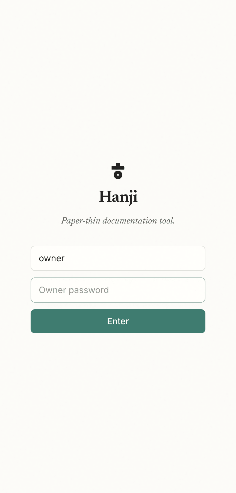

Install Hanji
Hanji runs today on a machine you own - the same way we run it ourselves, daily. The short version: install, pnpm dev:web, and the first visit walks you through everything on a welcome screen. This page keeps the explicit path - environment variables and CLI - for servers, scripts, and the people who like to see the wiring. Anything set by env always wins over what the welcome screen stored.
Before you start
You need a recent Node, pnpm, and git. One dependency, the SQLite driver, is built from source on install, so you also need a working C toolchain: the Xcode command-line tools on a Mac, or build-essential on Linux. That is a known rough edge, and smoothing it out is on the Where we are.
Get it running
# 1. install
pnpm install
# 2. point it at a data dir and set the front's secrets
export HANJI_DATA_DIR=~/.hanji
export HANJI_SESSION_SECRET=$(openssl rand -hex 32)
export HANJI_OWNER_PASSWORD=choose-one
# 3. mount a repo you own (name, git url, mount path)
pnpm hanji add-mount notes git@github.com:you/notes.git notes
# 4. clone and index it
pnpm hanji sync
# 5. run the two surfaces
pnpm dev:web # the human front at http://localhost:4100
pnpm dev:mcp # the agent surface at http://localhost:4101/mcp
Open http://localhost:4100, sign in with the owner password you set, and your notes are there, rendered on warm paper. That is the whole thing running.

The three secrets
| Variable | What it is |
|---|---|
HANJI_DATA_DIR | Where Hanji keeps its clones and its index. Everything here is disposable and rebuildable from git. |
HANJI_SESSION_SECRET | The key that signs your login session. Any 32-byte hex string. |
HANJI_OWNER_PASSWORD | The password for the single owner account, the one that reads and writes everything. |
Two more are optional. HANJI_GITHUB_TOKEN lets the propose path open real pull requests, and HANJI_GIT_AUTHOR_NAME with HANJI_GIT_AUTHOR_EMAIL set the name on the commits Hanji makes. See Agents for the first and Command reference for the rest.
Next, point Hanji at the repositories you actually want. Read Mounts.